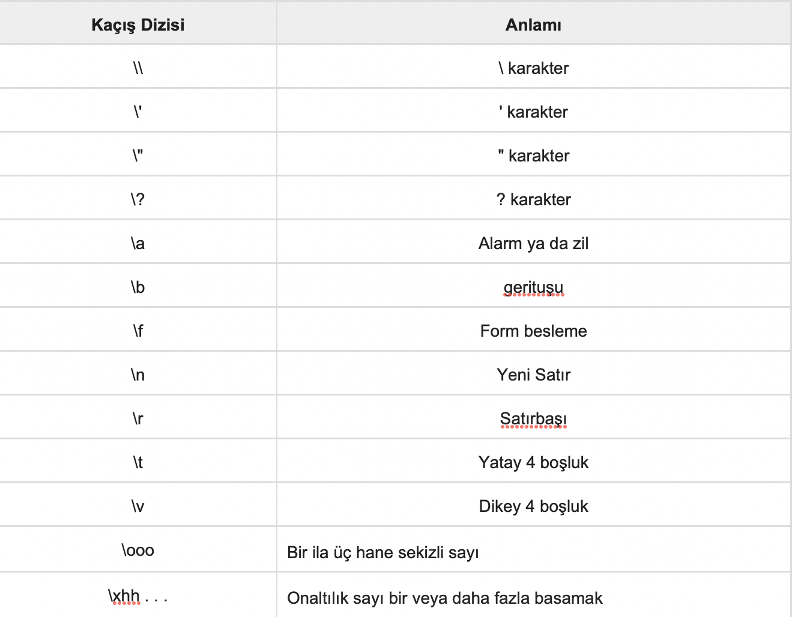

C Öğreticisi 5 (Sabitler ve Değişmezler)
Bu yazılar https://www.tutorialspoint.com/cprogramming/ adresindeki yazı dizilerinin çevirileridir.
Sabitler, programın yürütülmesi sırasında değiştiremeyeceği sabit değerler anlamına gelir. Bu sabit değerlere aynı zamanda değişmez denir.
Sabitler, bir tamsayı sabiti, bir değişken sabiti, bir karakter sabiti veya bir değişmez katarı(string) gibi temel veri türlerinden herhangi biri olabilir. Numaralandırma sabitleri de vardır.
Sabitler, tanımlarından sonra değerlerinin değiştirilememesi haricinde, normal değişkenler gibi ele alınır.
Tamsayı Değişmezleri
Bir tamsayı değişmezi ondalık, sekizli veya onaltılık bir sabit olabilir. Bir ön ek, taban veya sayı tabanını belirtir: onaltılık için 0x veya 0X, sekizlik için 0 veya ondalık için hiçbir şey.
Bir tamsayı değişmezi ayrıca sırasıyla işaretsiz veya uzun olarak U ve L’nin bir kombinasyonu olan bir son eke sahip olabilir. Son ek büyük veya küçük harf olabilir ve herhangi bir sırada olabilir.
İşte tamsayı değişmezlerinin bazı örnekleri -
212 /* Legal */ yasal
215u /* Legal */ yasal
0xFeeL /* Legal */ yasal
078 /* Illegal: 8 is not an octal digit */ yasadışı 8, sekizlik değil
032UU /* Illegal: cannot repeat a suffix */ yasadışı ek tekrarlanamaz
Aşağıda, çeşitli tamsayı değişmezlerinin diğer örnekleri verilmiştir -
85 /* decimal */
0213 /* octal */
0x4b /* hexadecimal */
30 /* int */
30u /* unsigned int */
30l /* long */
30ul /* unsigned long */
Kayan Noktalı Değişmezler
Bir kayan nokta değişmezi bir tamsayı parçasına, bir ondalık basamağa, kesirli bir kısma ve bir üs parçasına sahiptir. Kayan nokta değişmezlerini ondalık biçiminde veya üstel biçimde temsil edebilirsiniz.
Ondalık formu temsil ederken, ondalık nokta, üs ya da her ikisini de içermelisiniz; üstel formu temsil ederken, tamsayı kısmı, kesirli kısım veya her ikisini de dahil etmelisiniz. İşaretli üs e veya E şeklinde tanıtılrı.
İşte kayan nokta değişmezlerinden bazı örnekler -
3.14159 /* Legal */ yasal
314159E-5L /* Legal */ yasal
510E /* Illegal: incomplete exponent */ yasadışı eksik üs
210f /* Illegal: no decimal or exponent */ yasadışı ondalık veya üs değil
.e55 /* Illegal: missing integer or fraction */ yasadışı eksik tamsayı veya kesir
Karakter Sabitleri
Karakter değişmezleri tekli tırnak işaretleri içine alınır, örneğin ‘x’ basit bir char tipi değişkende saklanabilir.
Bir karakter değişmezi düz bir karakter (örneğin, ‘x’), bir kaçış dizisi (örneğin ‘\ t’) veya evrensel bir karakter (örneğin, ‘\ u02C0’) olabilir.
C’de, ters eğik çizgiden önce geldiğinde, örneğin yeni satır (\ n) veya sekme (\ t) gibi özel anlamı temsil eden belirli karakterler vardır.
Birkaç kaçış dizisi karakteri göstermek için örnek aşağıdadır -
#include
int main() {
printf(“Hello\tWorld\n\n”);
return 0;
}
Yukarıdaki kod derlendiğinde ve çalıştırıldığında, aşağıdaki sonucu verir -
Hello World
Katar(string) Değişmezleri
Katar(string) değişmezleri veya sabitleri “” çift tırnak işareti içine alınır. Bir dize, karakter değişmezlerine benzer karakterler içerir: düz karakterler, kaçış dizileri ve evrensel karakterler.
Katar(string) değişmezleri kullanarak ve bunları white space’ler kullanarak ayırarak uzun bir çizgiyi birden fazla satıra bölebilirsiniz.
Katar (string) değişmezlerin bazı örnekleri vardır. Üç formun tümü aynı dizelerdir.
“hello, dear”
“hello, \
dear”
“hello, “ “d” “ear”
Sabitleri Tanımlama
C de sabitleri tanımlamanın iki basit yolu vardır -
- #Define önişlemcisini kullanmak.
- Const anahtar sözcüğünü kullanmak.
#Define Ön İşlemcisi’ni Kullanmak
Aşağıda verilen bir sabit tanımlamak için #define önişlemcisini kullanma şeklidir -
#define tanımlayıcı değeri/p>
Aşağıdaki örnek onu ayrıntılı olarak açıklamaktadır -
#include
#define LENGTH 10
#define WIDTH 5
#define NEWLINE ‘\n’
int main() {
int area;
area = LENGTH * WIDTH;
printf(“value of area : %d”, area);
printf(“%c”, NEWLINE);
return 0;
}
Yukarıdaki kod derlendiğinde ve çalıştırıldığında, aşağıdaki sonucu verir -
value of area : 50
Const Anahtar Sözcüğünü Kullanmak
Aşağıdaki gibi belirli bir türe sahip sabitleri bildirmek için const ön ekini kullanabilirsiniz -
const tip değişken = değer;
Aşağıdaki örnek onu ayrıntılı olarak açıklamaktadır -
#include
int main() {
const int LENGTH = 10;
const int WIDTH = 5;
const char NEWLINE = ‘\n’;
int area;
area = LENGTH * WIDTH;
printf(“value of area : %d”, area);
printf(“%c”, NEWLINE);
return 0;
}
Yukarıdaki kod derlendiğinde ve çalıştırıldığında, aşağıdaki sonucu verir -
value of area : 50
CAPITALS’de sabitleri tanımlamanın iyi bir programlama uygulaması olduğuna dikkat edin.
https://www.tutorialspoint.com/cprogramming/c_constants.htm